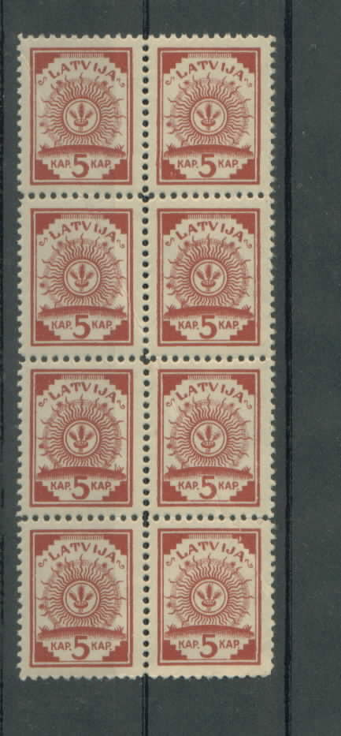
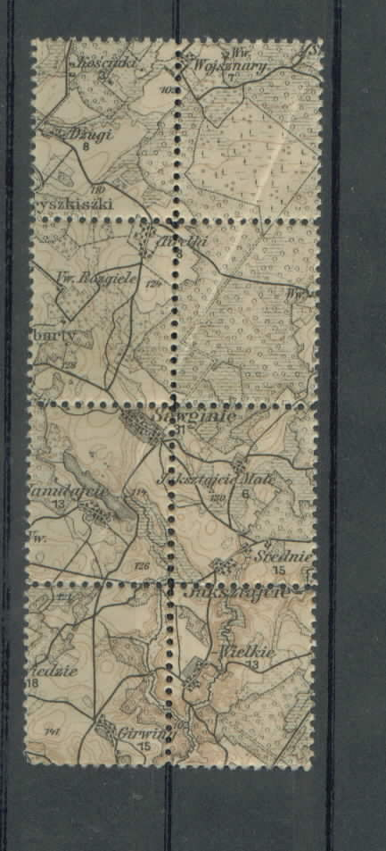
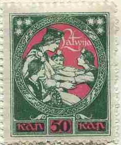
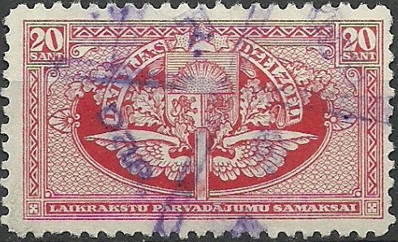
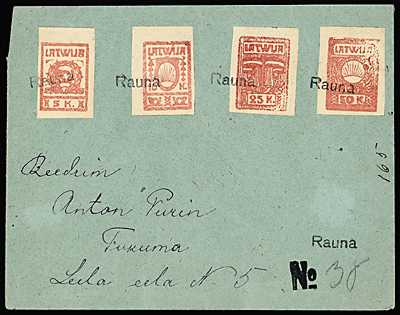
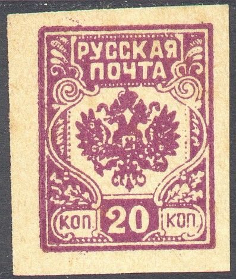
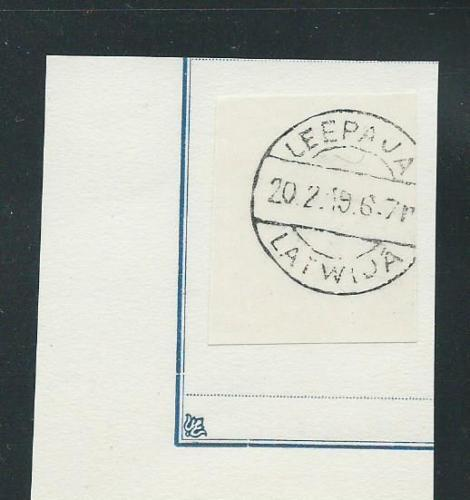

{kind=link}


Latvija - Lettland - Lettonie - Lettonia
Currency: 100 Kapeikas = 1 Rubel; After 1923: 100 Santimi = 1 Lats
Note: on my website many of the
pictures can not be seen! They are of course present in the
catalogue;
contact me if you want to purchase it.
Before the independance of Latvia, the stamps of Russia were used, example:
3 k lilac 5 k red 10 k blue 15 k green 20 k orange 25 k grey 35 k brown 40 k lilac (1921) 50 k violet 75 k green 3 R blue and red (1919) 5 R brown and red (1919)
Value of the stamps |
|||
vc = very common c = common * = not so common ** = uncommon |
*** = very uncommon R = rare RR = very rare RRR = extremely rare |
||
| Value | Unused | Used | Remarks |
| First issue (17 Dec 1918) Printed on backside of old maps | |||
| 5 k | vc | vc | Perforated 11 1/2 or imperforate |
| Second issue (21 Febr. 1919) Printed on normal paper with blue lines | |||
| 5 k | c | c | Perforated 11 1/2 or imperforate |
| 10 k | c | c | Perforated 11 1/2 or imperforate |
| 15 k | c | c | Perforated 11 1/2 or imperforate |
| Third issue (Febr 1919): printed on thin paper | |||
| 3 k | ** | ** | Perforated 11 1/2 or imperforate |
| 5 k | c | c | Perforated 11 1/2 or imperforate |
| 10 k | c | c | Perforated 11 1/2 or imperforate (*) |
| 15 k | c | c | Perforated 11 1/2 or imperforate |
| 20 k | c | c | Perforated 11 1/2 or imperforate |
| 25 k | *** | *** | Imperforate |
| 35 k | c | c | Perforated 11 1/2 or imperforate (*) |
| 50 k | c | c | Perforated 11 1/2 or imperforate (*) |
| 75 k | ** | ** | Perforated 11 1/2 or imperforate |
| Fourth issue (May
1919): printed on normal paper with watermark; all imperforate |
|||
| 3 k | vc | vc | |
| 5 k | vc | vc | |
| 10 k | vc | vc | |
| 15 k | vc | vc | |
| 20 k | vc | vc | |
| 25 k | c | c | |
| 35 k | c | c | |
| 50 k | c | c | |
| 75 k | c | c | |
| Fifth issue (14 Nov. 1919), perforated 11 1/2 | |||
| 3 R | * | * | |
| 5 R | c | c | |
| Sixth issue
(April-June 1920); normal paper, no watermark perforated 11 1/2 |
|||
| 5 k | vc | vc | |
| 20 k | c | c | |
| 40 k | vc | vc | Issued January 1921 |
| 50 k | vc | vc | |
| 75 k | vc | vc | |
Surcharged

'2 DIWI RUBLI' on 10 k blue (1920) '15 SANTIMU' on 40 k lilac (1927) '15 SANTIMU' on 50 k violet (1927)
Value of the stamps |
|||
vc = very common c = common * = not so common ** = uncommon |
*** = very uncommon R = rare RR = very rare RRR = extremely rare |
||
| Value | Unused | Used | Remarks |
| 2 R on 10 k | * | * | |
| 15 s on 40 k | * | * | |
| 15 s on 50 k | * | * | |
Some stamps of the 5 k value were printed on the back of maps. Example:


(Front and backside)


A nice site on the forgeries of this issue can be found at http://www.apsit.com/forgery.htm
Forgery with a sun ray ending just behind the "V" of
"LATVIJA" instead of in front of it. Apparently the
paper with the map is the same as used in the genuine stamps.
There are also four stars in the design of this forgery (the
genuine stamps only have three). The printing is badly done.
A second type of forgeries exists printed on forged German military maps. These forgeries are much more deceptive and were made in the 1980's (see above mentioned website for more details). Even a third type of forgeries seems to exist (Kull forgeries of the 3 k, 25 k and 75 k?). See also the Barefoot guide on forgeries of Latvia.
Later issues were also printed on the back of unfinished banknotes.
(Reduced sizes)
5 k red 15 k green 35 k brown Surcharged
'2 DIWI RUBLI' on 35 k brown (1920)
Value of the stamps |
|||
vc = very common c = common * = not so common ** = uncommon |
*** = very uncommon R = rare RR = very rare RRR = extremely rare |
||
| Value | Unused | Used | Remarks |
| 5 k | c | c | |
| 15 k | c | c | |
| 35 k | c | c | |
| 2 R on 35 k | c | c | Issued September 1920 |
(Reduced sizes)
10 k blue
These stamps are either imperforate or perforated 11 1/2.
Value of the stamps |
|||
vc = very common c = common * = not so common ** = uncommon |
*** = very uncommon R = rare RR = very rare RRR = extremely rare |
||
| Value | Unused | Used | Remarks |
| 10 k | c | c | |
10 k brown and red 25 k blue and green 35 k black and blue 1 R green and brown Surcharged
'WEENS 1 RUBLIS' (red) on 35 k black and blue (1920) 'DIVI 2 RUBLI' (red) on 25 k blue and green (1920) 'DIVI 2 RUBLI' (blue) on 35 k black and blue (1920?)
Value of the stamps |
|||
vc = very common c = common * = not so common ** = uncommon |
*** = very uncommon R = rare RR = very rare RRR = extremely rare |
||
| Value | Unused | Used | Remarks |
| All values | c | c | |
(Smaller and larger sized stamp)
(Front and backside of a 1 R stamp, reduced size)
10 k brown and red (2 sizes) 35 k blue and green 1 R green and red
Due to lack of paper the 1 R stamp was printed on the backside of banknote paper (see picture above).
Value of the stamps |
|||
vc = very common c = common * = not so common ** = uncommon |
*** = very uncommon R = rare RR = very rare RRR = extremely rare |
||
| Value | Unused | Used | Remarks |
| 10 k | c | c | |
| 35 k | c | c | |
| 1 R | * | * | |
Surcharged '10 ruble' on 1 R green and red (1920) '10 ruble' and 'Desmit rubli.' on 1 R green and red (1921) '20 ruble' (brown) on 1 R green and red (1920) '30 ruble' (blue) on 1 R green and red (1920) 'DIWI RUBLI 2' (red) on 35 k blue and green (1920)

50 k green and red 1 R green and brown Surcharged (1921) '10 DESMIT RBL' on 50 k green and red 20 R on 50 k green and red 30 R on 50 k green and red 50 R on 50 k green and red 100 R (blue) on 50 k green and red
50 k red 1 R blue 3 R brown and green 5 R grey and brown Surcharged 'DIVI 2 RUB.2' (blue) on 50 k red (1921) 1 L on 3 R brown and green (1927)
20 k + 30 k brown and red 40 k + 55 k blue and red 50 k + 70 k green and red 1 R + 1.30 R black and red Surcharged (1921) 'Rub 2 RUB' on 20 k + 30 k brown and red 'Rub 2 RUB' on 40 k + 55 k blue and red 'Rub 2 RUB' on 50 k + 70 k green and red 'Rub 2 RUB' on 1 R + 1.30 R black and red

These stamps were first issued with value in 'Kap' and 'Rubel',
later (1924) the set was re-issued in the currency 'Santimi' and
'Lati'.
50 k violet 1 R yellow 2 R green 3 R green 5 R red 6 R red 9 R orange 10 R blue 15 R blue 20 R lilac 50 R brown (larger size) 100 R blue (larger size) 1924 (new currency, "SANTIMI" and "LATI") 1 s violet 2 s yellow 3 s orange (1931) 4 s green 5 s green 6 s green on yellow 7 s green (1931) 10 s red 10 s green on yellow (1932) 12 s red 15 s brown on lilac 20 s blue 20 s lilac 25 s blue 30 s lilac 30 s blue (1928) 35 s blue (1931) 40 s lilac 50 s grey 1 L brown (larger size) 2 L blue (large size) 5 L green (larger size) 10 L red (larger size) Overprinted with cross and "KARA INVALIDIEN" and surcharged (all in blue)
1 + 10 s violet 2 + 10 s yellow 4 + 10 s green Overprinted "Latvijas razojumu izstade Riga 1932.g.10.-18.IX." (1932)
3 s orange 10 s green on yellow 20 s lilac 35 s blue
10 R green 20 R blue New value indication (1928)
10 s green 15 s red 25 s blue Overprinted "LATVIA AIZGARCI" (1931) 50 s (violet) on 10 s green (also exists imperforate) 1 L (blue) on 10 s red (also exists imperforate) 1.50 L (red) on 25 s blue (also exists imperforate) Overprinted "LATVIJA - AFRICA 1933" (imperforate) 10 s green 15 s red 25 s blue '50' on 15 s red '100' on 25 s blue
6 s + 12 s brown and blue (harbour view) 15 s + 25 s blue and brown (house) 25 s + 35 s brown and green (house with garden) 30 s + 40 s blue and brown (church) 50 s + 60 s green and violet (arms)
Imperforate stamps appeared through illegal means on the philatelic market.

Imperforate 30 s + 40 s stamp
2 s + 12 s orange 6 s + 16 s green 15 s + 25 s red-brown 25 s + 35 s blue 30 s + 40 s lilac
6 s green and violet 15 s brown and green 20 s red and green 30 s blue and brown 50 s grey and red 1 L brown and red-brown
6 s + 16 s green 10 s + 20 s red 15 s + 25 s lilac 30 s + 40 s blue 50 s + 60 s grey 1 L + 1.10 L brown
2 s + 4 s yellow 6 s + 12 s green 15 s + 25 s brown 25 s + 35 s blue 30 s + 40 s light blue
1 s + 2 s lilac 2 s + 4 s orange 4 s + 8 s green 6 s + 12 s green and brown 10 s + 20 s red 15 s + 30 s brown and green Airmail (birthplace of Rainis with aeroplane) 10 s + 20 s red and green 15 s + 30 s green and red
1 s + 2 s lilac and red (a misprint exists in the colors of 2 s + 4 s) 2 s + 4 s orange and red (cross and flowers) 4 s + 8 s green and red (woman and cross, 'LTAB' below) 5 s + 10 s green and brown (G.Zemgal, 'LT' and 'AB' in upper corners) 6 s + 12 s green and yellow (castle in Riga, 'LTAB' in label) 10 s + 20 s red and black (J.Tschakste) 15 s + 30 s red and green (flowers and cross, 'LTAB' at the bottom) 20 s + 40 s red and blue (A.Kwesis) 25 s + 50 s blue and red on lilac (hospital) 30 s + 60 s blue and black (3 presidents) Surcharged (1931) 9 s on 6 s + 12 s green and yellow 16 s on 1 s + 2 s lilac and red 17 s on 2 s + 4 s orange and red 19 s on 4 s + 8 s green and red 20 s on 5 s + 10 s green and brown 23 s on 15 s + 30 s red and green 25 s on 10 s + 20 s red and black 35 s on 20 s + 40 s red and blue 45 s on 25 s + 50 s blue and red on lilac 55 s on 30 s + 60 s blue and black
The above surcharged stamps can be considered as a speculative issue.
1 s + 11 s brown and blue 2 s + 17 s green and orange 3 s + 23 s brown and red 4 s + 34 s green and bluish green 5 s + 45 s olive-green and green
6 s + 25 s brown and lilac (marching army) 7 s + 35 s green and blue (attacking army) 10 s + 45 s green and brown (taking car of wounded soldiers) 12 s + 55 s red-brown and green 15 s + 75 s red-brown and black (General Janis Balodis) Airmail (triangular stamps with eagle) 10 s + 20 s green and light green 15 s + 30 s red and grey 25 s + 50 s blue and grey
5 s + 25 s brown and green (Icarus) 10 s + 50 s brown and green (Da Vinci) 15 s + 75 s brown and green (balloon) 20 s + 100 s green and red (Wright airplane) 25 s + 125 s brown and blue (Bleriot airplane)
2 s + 52 s yellow (Icarus) 3 s + 53 s red (graveyard) 10 s + 60 s green (statue) 20 s + 70 s red
3 s + 53 s red and grey (triangle) 7 s + 57 s blue and brown (triangle) 8 s + 68 s brown and black 12 s + 112 s red and green 30 s + 130 s blue and black 35 s + 135 s blue and black (triangle) 40 s + 190 s lilac and blue
3 s orange (tower at Riga) 5 s light green (arms) 10 s green (design as 5 s) 20 s red (woman guarded by soldiers) 35 s blue (building) 40 s brown (design as 3 s)
3 s orange (A.Kronvalds) 10 s green (A.Pumpurs) 20 s lilac (J.Maters) 35 s blue (Auseklis)
3 s orange (shield with 'L' and cross) 10 s green (plant with shield containing 'L' and cross below) 20 s lilac (crying man with shield containing 'L' and cross in background) 35 s blue (woman catching shield containint 'L' and cross)
3 s orange 5 s green 10 s green 20 s red 30 s blue (statue with three stars on top) 35 s blue 40 s brown
3 s orange 5 s light green 10 s green 20 s lilac 25 s violet 30 s blue 35 s blue 40 s brown 50 s black and green(?)
35 s blue (building) 40 s brown (bridge)
I have seen these two stamps in a mini-sheet with inscription "CELTNIECIBAS FONDA PASTMARKS" on top and "1938 CENA LS 2.-" at the bottom. Below the 35 s stamp is written "TIESU FILS" and below the 40 s stamp "KEGUMA SPEKSTACIJA".
3 s brown (lake with forest) 5 s green (lake with landscape) 10 s green (famous person, soldiers and bridge, larger size) 20 s red (famous person, woman with flag at right hand side, large size) 30 s blue (view of city) 35 s black (waterfall) 40 s lilac (country side view)
3 s brown (building) 5 s green (building) 10 s black (castle) 20 s red (statue) 30 s blue (eagle with flag) 35 s blue (building) 40 s brown (castle) 50 s black (saluting man)
10 s green (farmer) 20 s brown (apples)
1 s violet 2 s yellow 3 s red 5 s brown 7 s green 10 s blue 20 s red 30 s brown 35 s blue 50 s olive 1 L green

1 s ? 3 s ? 3 s red 5 s olive 7 s green 10 s ? 12 s ? 15 s ? 20 s brown 25 s ? 30 s ? 35 s blue 40 s ? 50 s ?

First issued in 1926. These are relatively large stamps with an image of a winged wheel. I have seen the values 10 s brown, 15 s violet, 20 s red, 50 s green and 1 Lats orange, .

5 k red 10 k blue 20 k green 30 k blue (pilot)
(Reduced size)
More stamps exist with this overprint, they were issued for the North West army of general Awalow - Bermondt, I don't know if these stamps were ever actually used.
I do not know if the next overprint is genuine or a bogus issue, I have seen the 50 k with the same overprint:
(Bogus overprint?)
Another overprint (I've been told that this was made for the Western Army?):
I have seen this overprint on the arms issue (3 k, 5 k, 10 k, 20 k, 25 k, 35 k, 50 k and 75 k) and the Riga 1919 issue (values 5 k, 15 k and 35 k).
Local stamps of Eleja, fiscal stamps 'STEMPELMARKA' overprinted
'PASTMARKA' (postage stamp) in red. I have seen the values 15 k
orange and 30 k green.
Local bogus issue for Rauna - Walmeera (Wolmar - Ronnenberg), supposedly issued on 12th December 1918:

The designs are fairly similar, I've seen the values 5 k, 10 k, 25 k and 50 k. The inscription is "LATWIJA". I've seen them with a straight 'Rauna' cancel or a straight 'Walmeera' cancel.
Another bogus issue:

Click on Russia non issued stamps for
more information
(Reduced sizes)
Inscription "ZIMOGMARKA" picture of a woman:
In this design I have seen: 20 s brown and green, 40 s green and brown.
Inscription "ZIMOGMARKA", arms of Latvia:
In this design I have seen 2 s orange, 3 s green, 5 s blue and 10 s olive.
A forged cancel made by the stamp forger Francois Fournier can be found in the Fournier Album (under Ethiopia). It was probably used on forged letters?

A forged Fournier cancel (reduced size) 'LEEPAJA LATWIJA 20 2.19
6-7?'
Stamps - Briefmarken - Timbres-Poste - Pastmarkas
{kind=link}